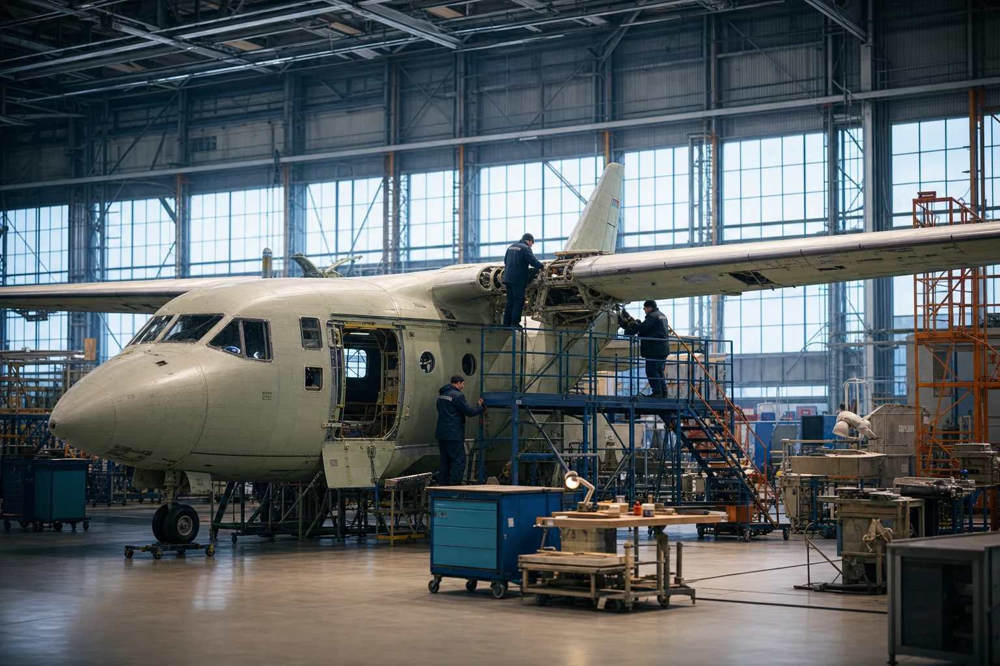
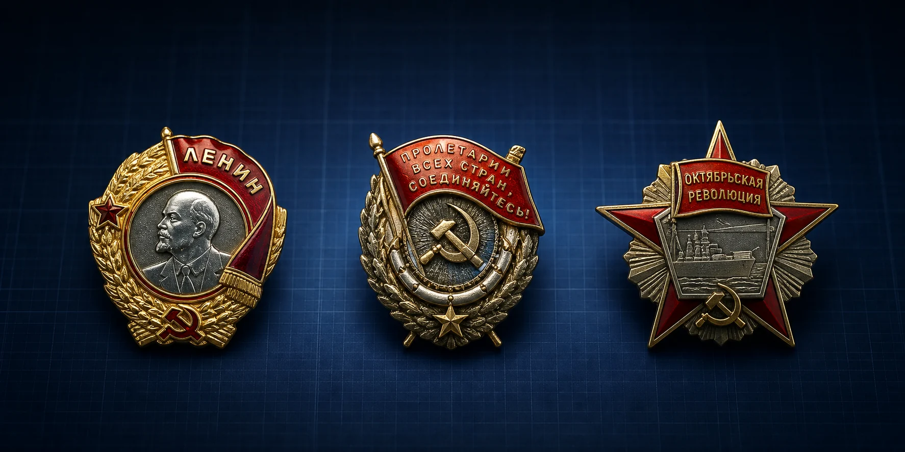
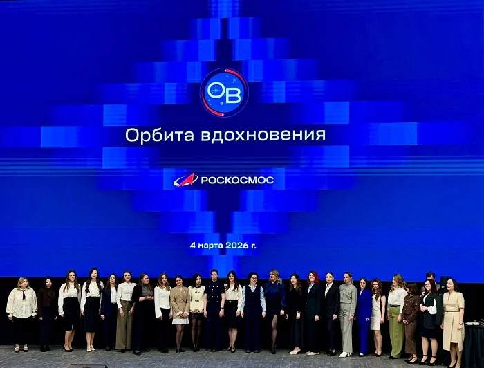

Омск · с 1941 года
Создаём технику,
которая летит
Инженерная школа, точное производство и люди, чья работа становится частью большой аэрокосмической истории страны.

Полёт начинается
с точностиКонцепция нового цифрового образа предприятия
и производственной школы
компетенций
имени М. В. Хруничева
Изображение создано для дизайн-концепта и не показывает реальный цех предприятия
01
О предприятии
Инженерная школа Омска
От авиации —
до космоса
Производственное объединение «Полёт» — одно из крупных промышленных предприятий России, специализирующееся на авиационной и ракетно-космической технике.
По открытым материалам предприятия, здесь выпускались ракеты-носители, космические аппараты, двигатели РД-170 и самолёты. Сегодня продолжаются техническое перевооружение и развитие высокотехнологичных производств.
Официальный источник ↗
1941
год начала истории предприятия в Омске
Опыт поколений.
Технологии будущего.
02
Компетенции
Создано поколениями
Масштаб. Точность.
Ответственность.
Четыре направления объединяет одна производственная культура: требовательность к качеству на каждом этапе.
Ракетно-космическая техника
Промышленный опыт, связанный с производством ракет-носителей и космических аппаратов.
КосмосАвиационное производство
Историческая компетенция предприятия — выпуск самолётов и агрегатов авиационной техники.
АвиацияДвигателестроение
Страница истории предприятия отмечает опыт выпуска сверхмощных двигателей РД-170.
ЭнергияТочное производство
Высокотехнологичные процессы, новое оборудование и квалифицированные специалисты.
Технологии03
Продукция и публичные направления
Только открытые сведения
То, что опубликовано
предприятием
В раздел включены только материалы, которые доступны на официальном сайте сейчас.
Сведения, отсутствующие в действующем публичном разделе, в концепт не переносятся. Исторические проекты обозначены отдельно и не выдаются за текущую серийную продукцию.
Открыть полный раздел →
Исторический проект · Авиация
⌁
Лёгкий многоцелевой самолёт Ан‑3Т
Разработка АНТК имени О. К. Антонова и производство ПО «Полёт». Представлен как часть истории предприятия.
Подробнее → Публичные документы▤
Электро- и теплоснабжение
Раскрытие информации по годам и переход к документам, регламентирующим закупочные процедуры.
Перейти → Официальный раздел↻
Реализация производственных отходов
Публичная информация о реализации лома чёрных и цветных металлов и прочих производственных отходов.
Перейти →
Люди и технологии
Сложная техника
рождается в команде
Современное предприятие — это не только станки и цеха. Это знания инженеров, точность рабочих профессий и общая ответственность за результат.
01
Инженерная подготовкаОт технологической идеи к выверенному процессу.
02
Точное изготовлениеКонтроль параметров на каждом производственном этапе.
03
Испытания и качествоПроверка готовности изделия к поставленной задаче.
04
История и наследие
Связь времён
Более восьмидесяти лет
движения вперёд
История «Полёта» — это смена эпох и технологий при неизменной ценности инженерного труда.
Начало пути
Формирование промышленной и инженерной школы предприятия в Омске.
Уникальная специализация
Самолёты, космические аппараты, ракеты-носители и двигатели.
Новый этап
Вхождение ПО «Полёт» в состав Центра имени М. В. Хруничева.
Технологическое развитие
Обновление производства и развитие новых профессиональных компетенций.

Правительственные награды
Труд, отмеченный
государством
На официальном сайте предприятия указаны три правительственные награды. В концепте они представлены как единая цифровая музейная экспозиция.
- 01Орден Ленина
- 02Орден Трудового Красного Знамени
- 03Орден Октябрьской Революции
05
Новости
В центре событий
Последние новости

05.03.2026 · Люди«Орбита вдохновения»: о женщинах, выбирающих космос
Читать на официальном сайте ↗Фото: официальный сайт ПО «Полёт» 12.02.2026 · КосмосРакета «Протон-М» успешно стартовала с аппаратом «Электро-Л» №5
Подробнее ↗Фото: официальный сайт ПО «Полёт» 04.02.2026 · РоскосмосСтартовал очередной отбор в отряд космонавтов
Подробнее ↗06
Корпоративная информация
Официальные ресурсы
Документы и общественная жизнь
Карточки ведут на действующие страницы официального сайта. Содержимое и документы не копируются и остаются у первоисточника.
01
▤
Раскрытие информации
Электро- и теплоснабжение, публикации по годам.
Официальный раздел ↗ 02⌘
Закупочные процедуры
Документы Центра имени М. В. Хруничева.
Официальный раздел ↗ 03◇
Противодействие коррупции
Телефон доверия и нормативные документы.
Официальный раздел ↗ 04↗
Целевое обучение
Направления подготовки и меры поддержки студентов.
Официальный раздел ↗ 05◎
Молодёжный совет
Общественная и профессиональная жизнь молодых сотрудников.
Официальный раздел ↗ 06+
Профсоюзная организация
Информация первичной профсоюзной организации.
Официальный раздел ↗Омск · Россия
Здесь начинается
полёт
Открытые контакты предприятия и отдела кадров.
ул. Б. Хмельницкого, 226
ул. Б. Хмельницкого, 287, каб. 14А